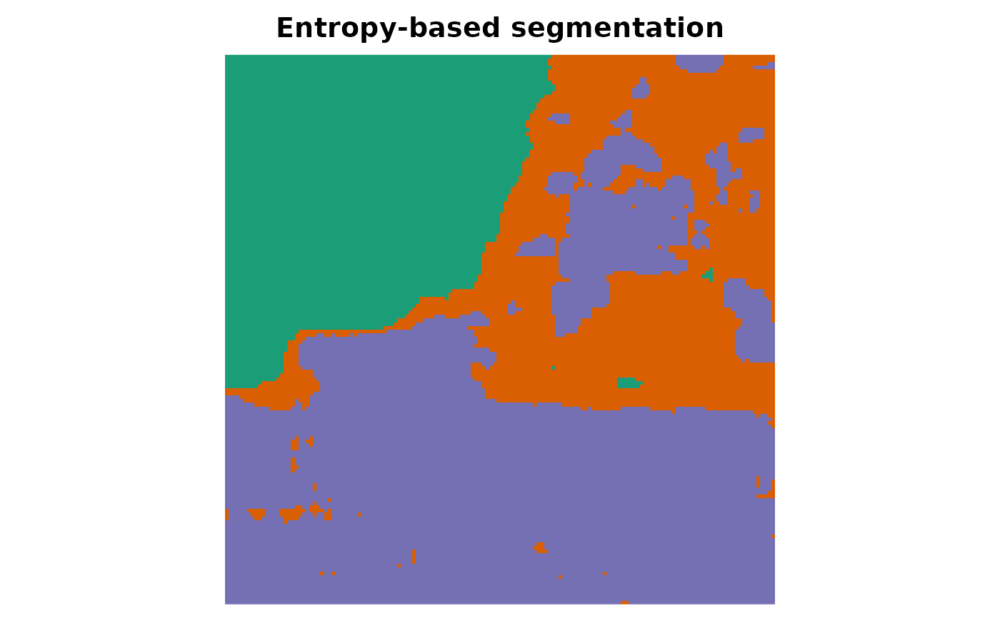

Unsupervised segmentation of SAR/PolSAR images from maps of estimated
Shannon entropies (Ferreira and Nascimento, 2020; Nascimento, Ferreira and
Frery, 2023). By the asymptotic normality of the entropy estimators, the
entropy vector of a pixel of the \(g\)-th region is approximately
Gaussian, so the image is modelled as a finite mixture of Gaussian laws
(with diagonal covariance matrices) fitted by the expectation-maximisation
algorithm (method = "em") or by its stochastic version (method = "sem"), in which the E-step is followed by a random allocation of every
pixel to a class drawn from its posterior probabilities. Pixels are then
labelled by the maximum a posteriori rule.
References
Ferreira, J. A. and Nascimento, A. D. C. (2020). Shannon entropy for the G0I model: a new segmentation approach. IEEE Journal of Selected Topics in Applied Earth Observations and Remote Sensing, 13, 2547–2553. doi:10.1109/JSTARS.2020.2997666
Nascimento, A. D. C., Ferreira, J. A. and Frery, A. C. (2023). Unsupervised segmentation of PolSAR data with complex Wishart and G0m distributions and Shannon entropy. Statistics and Computing, 33, 129. doi:10.1007/s11222-023-10298-0
Public fields
kNumber of classes.
method"em"or"sem".weightsMixture weights.
meansMatrix (
k x features) of class means.variancesMatrix (
k x features) of class variances.posteriorMatrix of posterior probabilities.
labelsInteger vector of labels (classes ordered by the mean of the first feature).
loglikTrace of the log-likelihood.
iterationsNumber of iterations.
convergedLogical convergence flag.
dimSpatial dimensions when fitted to a map (
NULLotherwise).
Methods
EntropySegmenter$new()
Create a segmenter.
Usage
EntropySegmenter$new(
k = 2,
method = c("em", "sem"),
max_iter = 200L,
tol = 1e-08
)Examples
H <- entropy_map(SanFrancisco150, model = "wishart", window = 7, L = 4)
set.seed(1)
seg <- EntropySegmenter$new(k = 3)$fit(H)
seg
#> <EntropySegmenter> k = 3 | method: EM
#> iterations: 20 | converged: TRUE
#> weights: 0.265 0.268 0.467
#> class sizes: 5933 5773 10794
plot_map(seg$label_map(), main = "Entropy-based segmentation")

kappa_statistics(SanFrancisco150_gt, seg$label_map())
#> # A tibble: 1 × 5
#> kappa variance std_error overall_accuracy n
#> <dbl> <dbl> <dbl> <dbl> <dbl>
#> 1 0.914 0.00000566 0.00238 0.945 22500